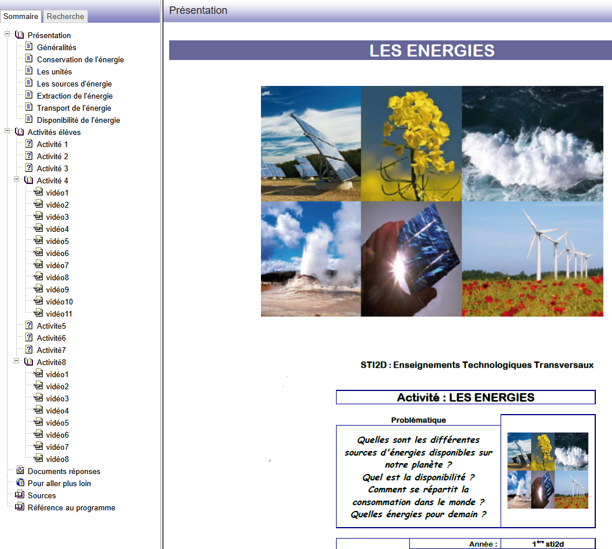
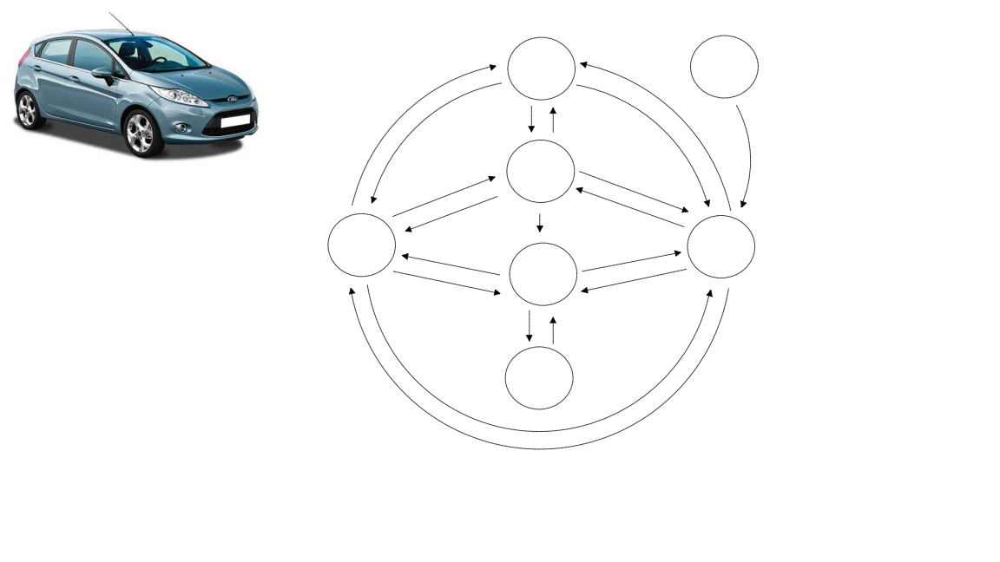
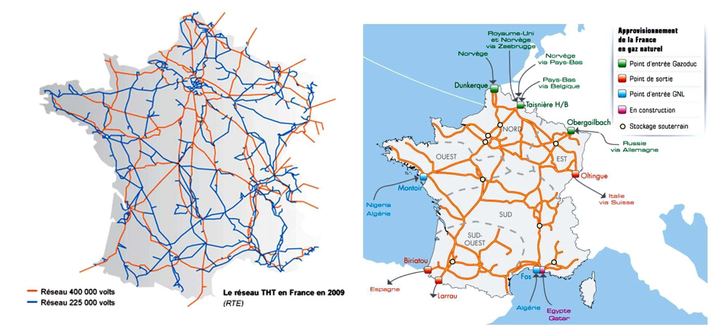
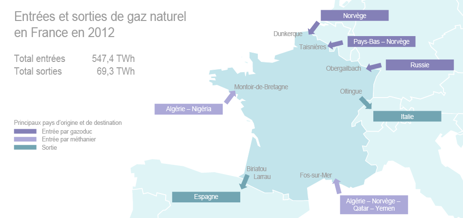

🎯 Compétences et objectifs
CO3.1
Identifier et caractériser les fonctions et constituants d'un système énergétiqueCO3.2
Identifier l'agencement matériel d'un produit de conversion d'énergieProblématique : L'énergie se présente sous de nombreuses formes et peut être convertie.
- Quelles sont les différentes formes d'énergie et comment les convertir ?
- D'où provient l'énergie que nous consommons et quelles sont les ressources de demain ?
📥 Ressources – Documents de travail
Télécharger les documents nécessaires pour réaliser l'activité :
- 📄 Les énergies – Sujet + Document réponse
🌐 Mini-site interactif

| Conversion d'énergie | Exemple de matériel |
|---|---|
| Thermique → Rayonnante | |
| Rayonnante → Thermique | |
| Thermique → Électrique | |
| Électrique → Thermique | |
| Électrique → Rayonnante | |
| Rayonnante → Électrique | |
| Rayonnante → Chimique | |
| Chimique → Rayonnante | |
| Électrique → Chimique | |
| Chimique → Électrique | |
| Chimique → Thermique | |
| Thermique → Chimique | |
| Électrique → Mécanique | |
| Mécanique → Électrique | |
| Mécanique → Thermique | |
| Thermique → Mécanique |
| Conversion | Exemple |
|---|---|
| Thermique → Rayonnante | Poêle à bois, bougie, radiateur incandescent |
| Rayonnante → Thermique | Peau humaine, bitume, capteur solaire thermique |
| Thermique → Électrique | Centrale thermique, thermocouple |
| Électrique → Thermique | Grille-pain, radiateur électrique, fer à repasser |
| Électrique → Rayonnante | Ampoule LED, écran TV |
| Rayonnante → Électrique | Panneau solaire photovoltaïque |
| Rayonnante → Chimique | Plante (photosynthèse) |
| Chimique → Rayonnante | Luciole, flamme |
| Électrique → Chimique | Électrolyse, chargeur de batterie |
| Chimique → Électrique | Pile, batterie, pile à combustible |
| Chimique → Thermique | Combustion (bois, gaz, essence) |
| Thermique → Chimique | Fermentation, distillation |
| Électrique → Mécanique | Moteur électrique, ventilateur, pompe |
| Mécanique → Électrique | Dynamo, alternateur, éolienne |
| Mécanique → Thermique | Freinage, frottements |
| Thermique → Mécanique | Machine à vapeur, moteur à combustion |

Énergie chimique (réservoir essence/diesel)
↓ Moteur à combustion interne
Énergie thermique + Énergie mécanique (arbre moteur)
↓ Transmission (boîte de vitesses, différentiel)
Énergie mécanique (roues)
+ pertes : Énergie thermique (échappement, frottements),
Énergie sonore (bruit moteur/roulement).

Apport de connaissance – Unités et conversions
Exercice 1 : Convertir 1 Wh en joules
Exercice 2 : Lampe 100 W allumée 2 h
Exercice 3 : Générateur fournissant 48 kWh/jour
Exercice 4 : 12 stères de bois (1 stère ≈ 1 000 kWh)
Ex1 : 1 Wh = 1 W × 3 600 s = 3 600 J
Ex2 : E = 100 × 2 = 200 Wh · 200 × 3 600 = 720 000 J = 720 kJ
Ex3 : P = 48 / 24 = 2 kW
Ex4 : 12 × 1 000 = 12 000 kWh économisés en énergie nucléaire.
Centrale hydraulique
Centrale thermique
Centrale solaire photovoltaïque
Chauffe-eau solaire
Centrale nucléaire
Centrale éolienne
Raffinerie de pétrole
Centrale géothermique
Centrale marémotrice
Pompe à chaleur
Centrale biomasse
| Installation | Énergie primaire | Transformateurs d'énergie | Énergie secondaire |
|---|---|---|---|
| Centrale hydraulique | |||
| Centrale thermique | |||
| Centrale solaire PV | |||
| Chauffe-eau solaire | |||
| Centrale nucléaire | |||
| Centrale éolienne | |||
| Raffinerie de pétrole | |||
| Centrale géothermique | |||
| Centrale marémotrice | |||
| Pompe à chaleur | |||
| Centrale biomasse |
| Installation | Énergie primaire | Transformateurs | Énergie secondaire |
|---|---|---|---|
| Centrale hydraulique | Potentielle (barrage) | Turbine + Alternateur | Électrique |
| Centrale thermique | Chimique (fioul, charbon) | Chaudière + Turbine vapeur + Alternateur | Électrique |
| Centrale solaire PV | Rayonnante (soleil) | Panneaux PV + Onduleur | Électrique |
| Chauffe-eau solaire | Rayonnante (soleil) | Capteur thermique + Échangeur | Thermique (eau chaude) |
| Centrale nucléaire | Nucléaire (uranium) | Réacteur + Turbine vapeur + Alternateur | Électrique |
| Centrale éolienne | Cinétique (vent) | Turbine + Génératrice | Électrique |
| Raffinerie de pétrole | Chimique (pétrole brut) | Distillation + Craquage | Chimique (carburants) |
| Centrale géothermique | Thermique (chaleur terrestre) | Échangeur + Turbine + Alternateur | Électrique / Thermique |
| Centrale marémotrice | Cinétique (marées) | Turbine + Alternateur | Électrique |
| Pompe à chaleur | Thermique (air/sol extérieur) | Compresseur + Échangeurs | Thermique (chauffage) |
| Centrale biomasse | Chimique (bois, déchets) | Chaudière + Turbine + Alternateur | Électrique / Thermique |

Q1. Principaux producteurs :
| Énergie | Plus gros producteurs |
|---|---|
| Charbon | |
| Pétrole | |
| Gaz naturel | |
| Uranium |
Q2. Plus faibles producteurs :
Q3. Conclusion concernant l'Europe :
Q1.
- Charbon : Chine (50%), Inde, USA, Australie
- Pétrole : USA, Arabie Saoudite, Russie, Iraq
- Gaz naturel : USA, Russie, Iran, Qatar
- Uranium : Kazakhstan, Canada, Australie, Namibie
Q2. Europe de l'Ouest (France, Allemagne, Italie…), Japon.
Q3. L'Europe est fortement dépendante des importations (pétrole du Moyen-Orient, gaz de Russie, uranium du Kazakhstan). Cela crée une vulnérabilité géopolitique et économique importante.

Q1. Combien de lignes électriques THT alimentent la Sarthe ?
Q2. Quelles sont les villes points d'entrée du gaz en France ?

Q3. Quel pays possède le plus grand réseau d'oléoducs ?
Q1. 4 lignes THT environ.
Q2. Dunkerque, Montoir-de-Bretagne, Fos-sur-Mer, Taisnière, Ollingue, Obergailbach.
Q3. Les USA possèdent le plus grand réseau d'oléoducs.

Q1. Pays les plus gros consommateurs :

Q2. Comparaison Canada / France / Chine / Bangladesh :
Q3. Calculer la consommation journalière en litres par habitant :
Q1. USA, Canada, Australie, puis pays du Golfe.
Q2. Canada très fort (~7,8 tep/h) · France modérée (~4 tep/h) · Chine en forte hausse depuis 2000 · Bangladesh très faible (~0,15 tep/h).
Q3.
France : 4,04 × 7,33 × 159 / 365 ≈ 12,9 L/jour
Canada : ≈ 24,9 L/jour
Bangladesh : ≈ 0,5 L/jour
Hydrolienne
Pile à combustible
Biocarburant
Centrale ITER (fusion)
Centrale solaire spatiale
Éolienne d'altitude
Centrale Pelamis (houle)
Centrale thermique des mers
| Installation | Énergie primaire | Transformateurs d'énergie | Énergie secondaire |
|---|---|---|---|
| Hydrolienne | |||
| Pile à combustible | |||
| Biocarburant | |||
| Centrale ITER | |||
| Centrale solaire spatiale | |||
| Éolienne d'altitude | |||
| Centrale Pelamis | |||
| Centrale thermique des mers |
| Installation | Énergie primaire | Transformateurs | Énergie secondaire |
|---|---|---|---|
| Hydrolienne | Cinétique (courants marins) | Turbine sous-marine + Génératrice | Électrique |
| Pile à combustible | Chimique (H₂) | Réaction H₂ + O₂ | Électrique + Thermique |
| Biocarburant | Chimique (végétaux) | Fermentation / Estérification | Chimique (carburant) |
| Centrale ITER | Nucléaire (fusion D-T) | Réacteur fusion + Turbine + Alternateur | Électrique |
| Centrale solaire spatiale | Rayonnante (soleil) | Panneaux PV + Micro-ondes + Antenne sol | Électrique |
| Éolienne d'altitude | Cinétique (vent altitude) | Cerf-volant générateur | Électrique |
| Centrale Pelamis | Cinétique (houle) | Serpent articulé + Vérins + Génératrice | Électrique |
| Centrale thermique des mers | Thermique (gradient mer) | Échangeur chaud/froid + Turbine | Électrique |
📌 À retenir – Essentiel
⚡ Formes d'énergie
- Thermique, rayonnante, chimique
- Électrique, mécanique, nucléaire
- Un convertisseur transforme l'une en l'autre
🌱 Renouvelables vs fossiles
- Renouvelables : solaire, éolien, hydraulique…
- Fossiles : pétrole, gaz, charbon (émetteurs CO₂)
🔢 Formules clés
P = E / t (W)
E = P × t (Wh)
🌍 Europe
Très peu productrice d'énergies fossiles → fortement dépendante des importations.